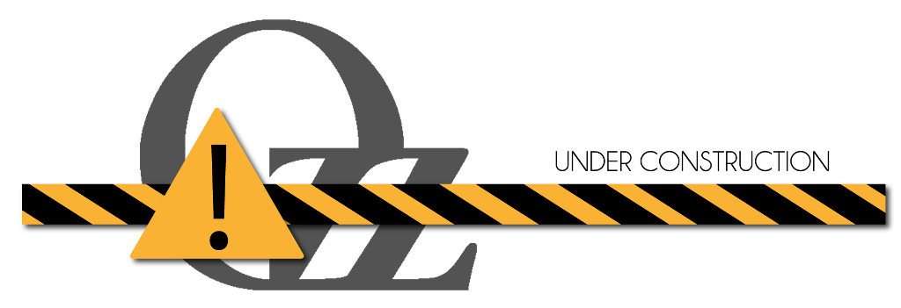

Open source c++ skeletal animation engine and tools

ozz-animation is an open source c++ 3d skeletal animation engine. It provides runtime character animation playback functionalities (loading, sampling, blending...), with full support for Collada and Fbx import formats. It proposes a low-level renderer agnostic and game-engine agnostic implementation, focusing on performance and memory constraints with a data-oriented design.
ozz-animation comes with Collada and Fbx toolchains to convert from major Digital Content Creation formats to ozz optimized runtime structures. Offline libraries are also provided to implement the conversion from any other animation and skeleton format.
The sample below demonstrates animation blending. It blends three animations (walk, jog and run) according to a single "speed" coefficient. This coefficient is used by the sample to compute all three animations blend weights.
More samples are available from the sources and pre-built binary packages.
Documentation is temporarily unavailable while migration to github is in progress.
Contributions are welcome: code review, bug fix, feature implementation...
ozz branching strategy follows gitflow model. When submitting patches, please:
ozz-animation is hosted at http://github.com/guillaumeblanc/ozz-animation and distributed under the MIT License (MIT).